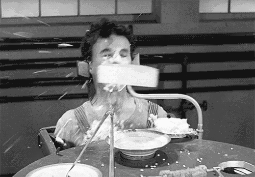

Abstract
Feeding others is considered one of the altruistic behaviors found among living creatures. Altruistic behavior entails providing valuable benefits to others at a personal cost.1 Handing nutritious food to needy strangers, even if one desires the food, is a uniquely human form of altruistic behavior.2 However, humans have also used feeding as a tactic to fulfil their personal or collective desire and aim. As I have directly or indirectly witnessed contradictory examples of feeding, I began to doubt whether one’s motive behind the act of feeding can be truly altruistic.
This thesis investigates if the act of feeding can be considered purely altruistic by comparing examples of feeding with contrary aspects and motives. It also attempts to find out what encourages humans to perform altruistic behaviors and the process of one’s anxiety and desire being relieved and transcended through altruistic behaviors by referring to 'Defense Mechanisms' by Anna Freud and 'Altruism' defined by George Vaillant as one of the mature defense mechanisms. I would like to have a look into the depictions of feeding in the movie Modern Times (1936).
Introduction
I have been enjoying cooking for others for the past few years and only recently realized that serving my own food to others has been working as a remedy for my longing for stability and desire to be taken care of. For quite some time now, I have found it out of place when facing a meal cooked by someone else. Despite the fact that I was once fed by my parents and took it for granted during my childhood, being fed by someone else or being served became an unusual event for me now as I have lived by myself for the past ten years.
I have been responsible for getting groceries, cooking, setting the table, and lifting a spoon towards my mouth while sitting at the table with no one else other than myself and those have been my daily task. Even on the days, I get served by others and have meals together, eating food that someone else prepared felt unnatural to me and I unconsciously reminded myself that I will have to be back at the table at my own place where I eat alone when I finish this meal. It became only natural for me to eat alone.
I tried not to attach any social significance to the act of eating and dining and equated dining with intake. I wanted to believe that the act of eating is purely to fuel myself so that way I do not get emotional too often.
With the start of Covid-19, the frequency of going out for dinner rapidly decreased and the measures made meeting up with people harder than it used to be. Due to such a shift, I started to invite people to my place and cook for them. Soon enough, feeding people became a hobby of mine in itself.
Serving the food I made for invited people and watching them eat was more memorable and brought more intrinsic quality to the dining table compared to ordering dishes from given menu boards and being served by strangers in a restaurant. Feeding others started to arouse a sense of deep contentment and oddly pleased me.
In my experience, being fed and sharing food definitely evoked different emotions and higher values. The topic of feeding was chosen with my personal appreciation for being able to take care of each other through food sharing.
The violence of feeding
Force-Feeding
In the novel The Vegetarian (2007), the protagonist is a married woman, Yeong-hye, who refuses to eat meat as she suffers from nightmares that started after witnessing a dog, that bit her leg, who was killed and eaten brutally in her childhood. However, her family members restrain her and shove meat in her mouth by force at the family gathering.3
Because of her aversion to meat, Yeong-hye has been isolated from society. This is because eating meat is seen as a measure of the abnormal and normal in Korean culture.4 The physical violence that Yeong-hye experienced from her father at the family gathering shows that eating meat signifies acceptance of patriarchal values and refusing meat signifies rejection of male dominance. Yeong-hye’s declaration that she is not eating meat anymore made all the family members urge her to eat meat by employing all means: they cajole, persuade, threaten, and scold her.5 Yeong-hye's brother-in-law describes the situation as follows,
Another scene in literature where a character is forced to eat can be found in the novel The Baron in the Trees (1957) by Italo Calvino where the 12-year-old protagonist, Cosimo, is forced to eat the snails that he attempted to extricate from his sister who treats and cooks animals cruelly.7
In both the novel The Vegetarian (2007) and the novel The Baron in the Trees (1957), being forced to eat represents violence. Being forced to eat as violence and an oppressive tactic in the novels results in the protagonists suffering not only physical restraint and harm but also mental and spiritual damage. Moreover, such force is used in a way that the protagonists are forced to comply with the coercive power and inequality prevalent in the society to which the protagonists belong whether it is small or big.
One of the similar examples found is school-provided meals in Korean primary and secondary schools. Most public schools in Korea provide school-wide meals. The meals provided by the school do not reflect individuals' medical history and liking. Students are encouraged to finish the whole meal by their authorities. In some cases, the authorities set rules that do not allow students to leave any leftovers. However, the labelling of allergenic ingredients is insufficient and often overlooked and the awareness of the seriousness of allergies lacks. As a result, there have been cases of students suffering from allergic reactions after school meals. Within Korean school-provided meal culture, all students are given the same menu and expected to finish the whole meal without considering individual’s nutritional status and health issues. Through such demand, it reveals collectivism and universality that Korean public schools emphasize during their education. It is not just a matter of balanced nutrient intake and food waste. It is an example of being forced to accept norms set by the authorities influencing students’ decisions on food intake in school. Forcing a young individual to swallow certain food under social pressure is as violent as physically forcing an individual to eat.
Force-feeding at the Guantanamo Bay Detention Camp
Force-feeding is a process thatinvolves the insertion of a gastrostomy tube into the patient's mouth to allow food or liquid to reach the stomach through the esophagus.8 As the tube passes through the esophagus and reaches the stomach, many patients suffer from gags, chokes, and vomiting.9 Force-feeding shares similarities with artificial feeding for the purpose of life support for mental patients and comatose patients. However, unlike artificial feeding, force-feeding tends to be conducted on patients or inmates who have decided not to eat or to go on a hunger strike.10 Since 1909, there has been debate over force-feeding and its ethical controversy. The discussions on force-feeding have led to discourses on prisoner welfare, medical ethics, human rights, and civil rights. During the suffragette movement in the UK, the Irish War of Independence, the Irish Civil War, the Cold War, and the Northern Ireland conflict, similar debates surrounding the ethics of force-feeding took place. It has been argued that the insertion of a gastrostomy tube can lead patients to persistent physical as well as emotional damage and at worst, death.11 The public debate on the ethical issues of force-feeding was truly reignited only in the 1970s during the Northern Ireland conflict. From 1973 to 1974, the case of force-feeding of Marian and Dolours Price drew international attention. Force-feeding was now being discussed in the context of the importance of human, prisoner, and patient rights. From the mid-1970s, detainees no longer had to eat against their will, but the hunger strike as a method of resistance continued. However, in the early 21st century, the U.S. government reimplemented this practice at the Guantanamo Bay detention camp12, a United States military prison occupied within Guantanamo Bay Naval Base.
The detainees at the camp began refusing meals to protest what they considered desecration13, the conditions of their confinement included alleged beatings, and indefinite detention without trial.14 Captain John Edmonson, the Naval Base's chief medical officer at the time, stated in 2005 that force-feeding was the last resort which was used only when counselling failed and the detainee's body mass index fell below the healthy range15 which is when the detainee's BMI drops below 85 percent of their intake weight.16 According to Edmonson, most detainees cooperated and restraints were unnecessary.17 Whereas the detainees described the force-feeding experience as a painful and torture-like process. According to the detainees, restraint chairs were used in the process of force-feeding and some detainees were over-fed and vomited.18
- Samir Naji al Hasan Moqbel (April 14, 2013)
Force-feeding is by no means an easy matter to gather public opinion on as force-feeding ostensibly aims to support one's life and health. However, it must be remembered that depriving sovereignty over one's body by another person or by the government for the sake of life-support is not a justifiable act. By initiating force-feeding, the US government has denied detainees' right to claim sovereignty over their bodies, providing an example of how institutional power and authority can work on individuals' bodies. The government's attempt to suppress hunger strike as a form of protest by detainees is not simply to save their lives, but to undermine the hunger strikers' will to protest. It is not ethically acceptable for institutions or other people to trample on the value that an individual wants to protect by disregarding the individual's will. Force-feeding hunger strikers through a degrading procedure cannot be considered a medical help. Force-feeding violates the human autonomy emphasized in the Nuremberg Code (1947) and the Declaration of Helsinki (1964). The Declaration of Tokyo (1975) prohibited Force-feeding and the United Nations defined force-feeding as a torture. Also, the World medical association banned force-feeding for its degrading and inhuman aspects during the Malta Declaration (1991).20 Despite its life-support purposes, force-feeding should not be carried out on individuals who are able to make a rational decision by themselves. Feeding someone can be an act of caring but if it is done with violence or under coercion, the feeding is not intended for the recipient's health.
Feederism
Feederism is a practice carried out by people who are sexually aroused by the gaining of body fat. The individuals who are involved in Feederism obtain sexual gratification from thoughts and actions related to weight gain, as well as from encouraging their partners to gain body fat through excessive food eating.21 The encouragement can be done both in the form of verbal encouragement and the form of physical encouragement which includes the preparation of food for feeding or literally feeding their partner food.
People who are involved in Feederism often identify themselves as “feeders/encouragers” or “feedees/gainers.” “Feeders” are part of “encouragers” which is a more comprehensive classification in the context of feeder relationship. According to Kulick, an anthropologist at New York University who wrote about Feederism and fat pornography, a feeder is a person who obtains sexual pleasure out of encouraging and helping another person gain weight. A feedee is someone who enjoys gaining weight, especially when assisted by a feeder, in the context of a sensual or a sexual relationship. The extremeness of weight gain varies and some “gainers” and “feedees” decide to rather fantasize about the practice than engage in actual weight gain.22
Feederism is classified as a fetish. Freud defined the term “pathological fetishism” as “occurring when an inanimate object or part of the body becomes the focus of arousal in preference to the person”23 According to the interview by Donna and Philippe, a couple in feeder relationship at the time of interview, Philippe, the feeder, acknowledges precisely that he “loves her (Donna's) fatness and how her fat moves under her clothes.” Philippe also calls Donna's body “a fat-lover's playground” and “there is more to work with between the cellulites, the stretchmarks, and the fat.”24 The way Philippe describes Donna, his partner, sounds more like an exposition of an object which is his source of pride and sexual pleasure than it is about a human being. He gets excited over Donna's specific physical trait which is being obese and is obsessed with her size.
In the most extreme feeder relationships, the feedee becoming immobile due to weight gain is the ultimate goal.25 Dr. Chris Kraft, a psychiatrist at Johns Hopkins Hospital, argues that the pursuit of complete immobility in feeder relationship accentuates the power dynamic where the person who is immobile appears to feel complete powerless and the person who is feeding them can feel completely powerful. He also mentions that the feedees tend to feel empowered, get tension, and sometimes validation from being obese.26
Feeding in feeder relationships is not just a matter of showing care and affection to one another through food. There are opinions against the way feederism has been portrayed in the media and argues it is lopsided and exaggerated. Also, some argue weight gaining for sexual pleasure in a feeder relationship is their own choice if it is by mutual consent between the feeder and feedee. One's sexual orientation and the self-determination over one's own body should be respected. However, a sexual relationship built upon fetishism that harms one's physical health and obstructs one's sound decision-making should never be encouraged.
Feeding as
an altruistic human behavior
Most mammals are born as infants that can only survive when fed by someone else in their earlier stages of life. Providing sufficient nourishment for the infant's physical development is one of the crucial responsibilities of a parent or caregiver. Even after the children become able to control their body on their own, the feeding by their parents or caregivers tends to continue.
I recall the meals I had daily in my Korean household in my earlier days. The majority of parts that take up my memories of being fed by my parents as a child are not the eating but the transmissions of love and care between each other. My parents expressed their love and dedication through food and feeding and I expressed my appreciation and attachment by eating up. Anne Malavé, a Clinical Psychologist-Psychoanalyst, stated that eating food is often solitary; feeding is always interpersonal.27 Eating can be done alone, however, feeding involves at least two people and the interaction between them in order to be done. Feeding in the context of human relationships is not simply the transferring of food but implies various social aspects.
Cross-feeding and Wet-nursing
Nursing is human’s first and most intimate feeding experience.28 According to Malavé, nursing is a form of social food transfer which combines the three different modes of social transfer and one of the most unique modes of nursing is that the food offered by the mother is a part of herself and it is passed into the infant in both a physical and metaphorical sense.29 In that sense, nursing is unique from other ways of feeding and indeed has a huge impact on the infants both physically and psychologically. In most cases, infants are nursed with their biological mother's breast milk or baby formula through breast-feeding or bottle-feeding.
However, there are cases of nursing an infant with breast milks of women who are not biologically related to the infant. For example, in Korea, the word Jeot-dong-nyang (젖동냥) means asking women who are not the biological mother of the infant for breast milk. Jeot-dong-nyang is no longer common in Korea as breastmilk can be replaced with baby formula. Jeot-dong-nyang was one of the few options for those who are left with an infant without the mother, usually the father or older siblings of the infant, to nourish the infant in the past and especially during the Korean war. There is a concept that is similar to Jeot-dong-nyang and it is Cross-feeding. Cross-feeding is the informal sharing of breastfeeding between equals and is usually unpaid and may be reciprocal.30 The World Health Organization (WHO) argues that cross-feeding is favored over formula feeding when an infant's biological mother is not available to nurse her own infant.31 There are also opinions that worry about possible transmission of disease or harmful substances since one's breastmilk is one's body fluid. However, Laurence Grummer-Strawn, chief of the Nutrition Branch at the U.S. Centers for Disease Control and Prevention (CDC) and technical officer of the World Health Organization's Department of Nutrition for Health and Development, argues that breastfeeding an infant that is not biologically related is perfectly safe so long as the infant and the woman providing her breastmilk are both disease-free.32 Jeot-dong-nyang and cross-feeding are unique altruistic human traits in the sense that they are both acts that are to help an infant who is not related by blood to survive at no cost. Therefore, Jeot-dong-nyang and cross-feeding are examples of altruistic behavior found in the act of feeding.
In the nineteenth century, wet nursing was widely practiced in Europe, whereby rural or less affluent women ideally in their 20s and in good health were regularly employed to nurse children of the employers. As opposed to women who cross-feed someone else's child, wet nurses were paid to breastfeed other's children. Most families who were financially capable of hiring wet nurses usually sent their new-borns to the country to be nursed for a period of one to two years. Rural or less affluent women who are ideally in their 20s and in good health were regularly employed to nurse children of the employers and wet nursing was widely practiced in Europe.33 As opposed to women who cross-feed someone else's child, wet nurses were paid to breastfeed other's children. Most families who were financially capable of hiring wet nurses usually sent their newborns to the country to be nursed for a period of one to two years.34 In many cases, wet nurses were required to register and undergo medical exams.35 During the Industrial Revolution, lower-income families also employed wet nurses as more women began working and the rural women assumed the role of wet nurses.36 Breastfeeding someone else's children was a source of income for wet nurses and was a common career choice for women among lower classes.37
Fragonard, Jean-Honoré. The Visit to the Wet Nurse. 1770-1775.
However, professional wet nursing often was problematic due to the separation of mothers from their own children as the wet nurse had to leave her family to live in her employer's home, usually without her own child.38 Despite the rise of bottle-feeding at the end of the nineteenth century within wealthy families, wet nursing did not die out in Europe.39 Wet nursing and cross-feeding shares similarities in the sense that both involve women breastfeeding someone else's child. However, wet nurses were not on the equal footing with the employers, whereas women who cross-feed are. There is a clear hierarchy in wet nursing that is based on social and economic status of women. Breastfeeding is an act that can be only done by biological women, and breastfeeding as a form of labor can be used as an act of altruism, as well as an economic activity of women. Breastfeeding as an economic activity should be decided by the woman who performs, and exploitation should never be involved by any means as breastfeeding interrelates with the body of women.
Breastfeeding in Western fine arts
The mother breastfeeding her child is a familiar composition in western art as there have been many depictions of Jesus and Mary.40 The breastfeeding Virgin Mary is often portrayed as a pure white virgin in historical drapery.41 In the Virgin and Child before a Firescreen, a painting by Robert Campin, Mary gazes at the baby in a peaceful atmosphere while breastfeeding him.
Campin, Robert. The Virgin and Child before a Firescreen. 1440.
Tintoretto, Jacopo. The Origin of the Milky Way. 1575.
Breastfeeding is also associated with goddess in western paintings.42 In the painting The Origin of the Milky Way by Jacopo Tintoretto, Jupiter holds Hercules to Juno's breast and the spurted milk creates the milky way. Such depictions of breastfeeding raise the act of breastfeeding into something magical and sacred.43 However, such depictions of breastfeeding are unrealistic to ordinary mothers. Creating a milky way with breastmilk cannot happen during real-life breastfeeding and even the peacefulness portrayed in The Virgin and Child before a Firesceen is hard to obtain.
Breastfeeding is an act of a mother nourishing her child and it involves the physical labor and effort by the mother. Besides the production of nourishment and the transfer, mothers need to find a space and hold the baby in restricted posture. The mothers also endure mental strains from breastfeeding. Breastfeeding is a unique experience in terms of the communion between the mother and child, however, breastfeeding requires both physical and mental labor of women. The images of breastfeeding that are overly glamourized can lead to misconception around breastfeeding and overlooking women's labor.
Feeding and Food Sharing
The form of food sharing varies from culture to culture. For instance, platters are shared by the people around the dining table in China whereas in the U.S., people tend to eat from their own plate that is individually portioned. Despite such differences in the food sharing culture, food sharing itself is found in most cultures and is an act that is closely associated with humans and how humans relate to each other. Research led by Charlotte De Backer of the University of Antwerp shows that those who had shared meals more frequently in childhood scored better for altruistic behaviors, particularly giving direction to strangers, offering their seats on public transportation, helping their friends move, and volunteering.44 De Backer also notes that “sharing food primes people to think about fairness, authority, and greed.”45 As proven in De Backer's research, the interaction between humans on the dining table goes beyond eating. The dining table is where the exchange of social values and establishment of one's identity as a member of society happens. According to De Backer, people tend to engage with their more prosocial selves when food is served “family style” or on a large platter meant to share.46 By observing the limited amount of food being distributed, the dining table suddenly becomes a learning place for humans and leads humans to think about their relationships with others.
One of the images that pop up in mind when thinking of a couple is an image of one holding a spoon towards the other's mouth and the other smiling with their mouth open. Feeding is an act that involves fundamental qualities within a partner relationship. Through the daily sharing of food and feeding, couples can receive a sense of feeling that they are sharing their lives with each other. Couples can feel secure via constant eating together as eating is an essential part of humans' lives and survival. According to Courtship Feeding in Humans?, an article by Thomas R Ally, Lauren W Brubaker, and Olivia M Fox, adult humans tend to perceive more intimacy in a couple if feeding is observed.47 Also, the findings of studies presented in Food sharing and feeding another person suggest intimacy support the hypothesis that American students associate feeding with a romantic and/or sexual relationship.48 The act of feeding one another plays an important role in bonding and building relationships not only in the earlier stages of one's life but also in their adulthood when it comes to romantic relationships.
One of the examples of humans feeding and taking care of a larger group of people is offering meals at soup kitchens. A soup kitchen is a place where food is offered to those who cannot afford food, to cook, in essence it is a service to people who have fallen out of society’s system. Soup kitchen thus offer food to the hungry usually for free or sometimes at a below-market price.49 The origins of soup kitchens are hard to pinpoint and they might have been initiated by many services. However, Sir Benjamin Thompson, an American-born British physicist, is known to be the one established the first modern soup kitchens in the Western realm.50 The concept of soup kitchens started to spread around the world. Soup kitchens became more prominent in the 20th century during the Great Depression.51 The soup kitchen culture which feeds the hungry especially in the time of a tough economy has its own uniqueness within other feedings. Soup kitchens feed a larger group of people and the feeding in the soup kitchen becomes more active during economic hardships. The soup kitchen culture underlines humans' cooperation and a sense of community through sharing and feeding the people in need.
In the art scene, an artist-run restaurant named FOOD was founded by three New York-based artists Gordon Matta-Clark, Carol Goodden, and Tina Girouard. FOOD was considered one of the first important restaurants in SoHo52 and was a place for artists to meet and eat together.53 Artists were invited to the restaurant and some artists work at the restaurant on the regular basis.54 The foods served in the restaurant were affordable55 and the restaurant served nearly one hundred people daily in 1972.56 The intention of its foundation was not only to hold perpetual dinners but also to support struggling artists within the community which is a food-based philanthropy of the founders.57 Through running a restaurant that is a business and an artistic intervention in an urban setting58, the founders as artists not only contribute to the development of social practice art59 but also provided practical support to the artists and their community.
The examples mentioned in Chapter two have altruistic behaviour in common. Altruism is defined as an individual's caring concern and act for the well-being of others.60 It seems like it is not the material rewards that encourage the feeders in previous examples to offer their resources to others. In my personal experience, I tend to feel more worthy when I perform altruistic behaviour and because of the satisfaction remains afterwards, I perceive performing altruistic behaviour as an act that is not only done for others but also for myself. I found myself not seized by many other desires or loneliness that I suffer from when I am devoting my efforts to other people. There was a definite phycological gain for me in performing altruistic behaviour and I personally have considered it a remedy for my anxiety. In my case altruism has been to relieve my own desires that I could not fulfil myself.
Defense mechanisms, previously noted by Sigmund Freud and later developed by Anna Freud, are psychological strategies that are used to protect a person from anxiety which involve a distortion of reality for the person to be better able to cope with a situation.61 George Vaillant, an American psychiatrist and Professor at Harvard Medical School, has taken Freud's ideas and defined defences as “unconscious homeostatic mechanisms that reduce the disorganizing effects of sudden stress.”62 Defences in Vaillant’s system are organized along a continuum of immature-to-mature. According to Vaillant, the highest level are mature defenses, where altruism as defense mechanism belongs.63 Vaillant argues that using Altruism as a mature defense mechanism, people can derive satisfaction, perspective, and meaning from employing their resources and talents to help others.64
By applying Freud's defense mechanism and Vaillant's definition of altruism in the context of mature defense, it is derivable that it might be the satisfaction and a sense of reduced anxiety through helping others that feeders receive in return for offering their resources and energy to feed others.
Feeding machine in Modern Times (1936)
The Billows Feeding Machine – Modern times (1936)
Modern times (1936) by Charlie Chaplin is a film that criticizes the dehumanizing aspects of industrialization during the machine age through hyperbolic expressions. The Tramp, the main character, is an assembly line worker who struggles to survive as a worker in the industrialized modern world. He suffers from the repetitive factory work and the stress from fast-paced labor.65 During his lunch break, the Tramp is pressured by his boss to participate in the demonstration of the Billows Feeding Machine, an automated device that guarantees ultimate efficiency by feeding the workers while at work, which aims to eliminate the lunch hour.66
The Tramp gets strapped into the feeding machine without his hands allowed on the table. He is not able to act upon his will during the eating under the control of the feeding machine. He must eat according to the order and pace at which the machine is set. The only part of his body that he can move is his mouth, however, his mouth eventually becomes helpless as the machine shoves food into his mouth. Even though the feeding machine is designed to minimize the labor of eating, the Tramp seems more uncomfortable and stressed. It is because the feeding machine was not invented to ease the physical labor of workers but to extend the actual working time by taking their lunch break away. Due to its exploitative purpose and deprivation of autonomy, it provokes uneasiness even in the beginning of the demonstration where the feeding machine works properly.67 As the feeding machine starts to malfunction, the Tramp is humiliated even more. The food is spilled on him and the parts of the machine that rapidly spin slap his face several times. In such a situation, the boss and the interested parties only keep their eyes on the feeding machine. After the repair when they try the soup again, he seems like he knows what awaits him. The feeding machine spins even faster and repeatedly hits his face. The boss and the interested parties only care about the trialability of the machine even after the straps loosen and the Tramp falls. The scene ends with their conclusion on the feeding machine: “It's no good – it isn't practical." The Tramp does not appear after that.
The authority to decide what to eat and how to eat should belong to the eater. However, the factory attempts to deprive the workers' autonomy over eating and ignores the worker’s right to rest. The scene points out the drastically industrialized society and how such a society can result in dehumanization.68 Just like the feeding machine, workers are the subject of efficiency and practicality.
Conclusion
In conclusion, feeding is a complex and multifaceted aspect of human life that can manifest in both positive and negative impacts on humans. This thesis explored the violence of feeding, which can be found in force-feeding and feederism, where individuals or institutions use feeding as a means of control and a tactic to fulfill their desires. As observed in the examples, power structures within social relationships can be revealed through the act of feeding. Through force-feeding particularly in the context of Guantanamo Bay detention camp, the U.S. government has exerted its power and control over the detainees at the detention camp. In the case of feeder and feedee relationships, the feeder gains the power to control the body of the feedee. The power dynamics in both cases are based on unequal terms.
However, feeding also can highlight the altruistic behavior of humans as discussed in the second chapter. In the case of food sharing and cross-feeding, feeding has been a manifestation of altruistic human behavior. In addition, breastfeeding which is done by biological women involves significant labor by the women as it is physically demanding. Therefore, breastfeeding should be considered as a form of labor and the physical, emotional, and societal challenges must be recognized.
Furthermore, the impact of industrialism and extreme obsession with efficiency on the way workers have lunch seen in the movie Modern Times reminds that evolving technology should never replace an individual's dignity. This thesis underscores the significance of acknowledging and comprehending the various ways in which feeding can influence individuals and society. It is important to recognize the impact of both positives and negatives and strive to encourage feeding practices that prioritize human dignity and autonomy.
Bibliography
Barragan, Rodolfo Cortes, et al. “Altruistic Food Sharing Behavior by Human Infants after a Hunger Manipulation.” Nature News, Nature Publishing Group, 4 Feb. 2020, https://www.nature.com/articles/s41598-020-58645-9.
Kang, Han. The Vegetarian. Changbi Publishers, 2007.
Kim, Won-Chung. “Eating and Suffering in Han Kang’s The Vegetarian.” Purdue University, 2019, https://docs.lib.purdue.edu/cgi/viewcontent.cgi?article=3390&context=clcweb.
Calvino, Italo. The Baron in the Trees. Vintage Classics, 2021.
Miller, Ian. A History of Force Feeding Hunger Strikes, Prisons and Medical Ethics, 1909–1974. Springer International Publishing, 2018.
Maher, Heather. “Explainer: What's behind The Hunger Strike at Guantanamo Bay?” RadioFreeEurope/RadioLiberty, Radio Free Europe / Radio Liberty, 8 Apr. 2013, https://www.rferl.org/a/explainer-guantanamo-hunger-strike/24947945.html.
Paik, A. Naomi. “Ice Detainees on Hunger Strike Are Being Force-Fed, Just like Guantánamo Detainees before Them.” The Conversation, 25 Oct. 2022, https://theconversation.com/ice-detainees-on-hunger-strike-are-being-force-fed-just-like-guantanamo-detainees-before-them-111328.
Rehm, Kathleen. “GTMO Feedings Humane, within Medical Care Standards.” The Wire (JTF-GTMO), 2 Feb. 2010, https://web.archive.org/web/20120604232443/http://www.jtfgtmo.
southcom.mil/wire/wire/WirePDF/v6/TheWire-v6-i036-9DEC2005.pdf.
Moqbel, Samir. “Gitmo Is Killing Me.” The New York Times, The New York Times, 15 Apr. 2013, https://www.nytimes.com/2013/04/15/opinion/hunger-striking-at-guantanamo-bay.html.
Griffiths, Mark D. “Feeding an Addiction?” Psychology Today, Sussex Publishers, 4 Aug. 2013, https://www.psychologytoday.com/us/blog/in-excess/201308/feeding-addiction.
Bestard, Alyshia D. Feederism: an exploratoy study into the stigma of erotic weight gain. 2008. University of Waterloo, Sociology and Legal Studies. UWSPACE, https://uwspace.uwaterloo.ca/bitstream/handle/10012
/3985/Bestard_THESIS.pdf?sequence=1&isAllowed=y. Accessed January 2023.
TLCTVUK. The Desire To Feed Your Partner: Feederism | Strange Sex. YouTube, YouTube, 18 Mar. 2018, https://www.youtube.com/watch?v=Od8wt1uxv5w. Accessed 25 Jan. 2023.
Malavé, Anne. “Feeding and Needing.” Psychology Today, Sussex Publishers, 27 Feb. 2017, https://www.psychologytoday.com/us/blog/contemporary-psychoanalysis-in-action/201702/feeding-and-needing.
Thorley, Virginia. “Sharing Breastmilk: Wet Nursing, Cross Feeding, and Milk Donations.” ResearchGate, Apr. 2008, https://www.researchgate.net/publication/5309836_Sharing_breastmilk
_Wet_nursing_cross_feeding_and_milk_donations.
Narins, Elizabeth. “3 Mothers Who Breastfed Other Babies: ‘It's Natural.’” Cosmopolitan, 20 Aug. 2015, https://www.cosmopolitan.com/lifestyle/interviews/a45102/cross-breastfeeding/.
Moran, Claire. “What These Impressionist Paintings Reveal about Breastfeeding in the 19th Century.” CNN, Cable News Network, 20 Dec. 2022, https://edition.cnn.com/style/article/impressionism-breastfeeding-the-conversation/index.html.
Levitt, Sarah. “Breastfeeding in Art: Ernst Neuschul's 'Black Mother'.” Breastfeeding in Art: Ernst Neuschul's 'Black Mother' | Art UK, 22 July 2016, https://artuk.org/discover/stories/breastfeeding-in-art-ernst-neuschuls-black-mother.
Lowen, Linda. “Would You Let Another Woman Nurse Your Child?” ThoughtCo, ThoughtCo, 3 Jan. 2020, https://www.thoughtco.com/history-and-definition-of-wet-nurse-3534100.
Oaklander, Mandy. “Altruism and Prosocial: Sharing Food Makes You a Better Person.” Time, Time, 8 Nov. 2014, https://time.com/3572252/sharing-food-happiness/.
Alley, Thomas, et al. “Courtship Feeding in Humans? the Effects of Feeding versus Providing ...” ResearchGate, Oct. 2013, https://www.researchgate.net/publication/257534187_Courtship_Feeding
_in_Humans_The_Effects_of_Feeding_versus_Providing_Food_on_Perceived
_Attraction_and_Intimacy.
“Soup Kitchen.” Wikipedia, Wikimedia Foundation, 29 Nov. 2022, https://en.wikipedia.org/wiki/Soup_kitchen#cite_note-allAboutSoup-3.
Justin. “Carol Goodden & Gordon Matta-Clark's Food.” Broken City Lab, 5 July 2018, http://www.brokencitylab.org/blog/carol-goodden-gordon-matta-clarks-food/.
Clintberg, Mark. “The Story of FOOD.” Canadian Centre for Architecture, 2011, https://www.cca.qc.ca/en/.
Kennedy, Randy. “When Meals Played the Muse.” The New York Times, The New York Times, 21 Feb. 2007, https://www.nytimes.com/2007/02/21/dining/21soho.html?pagewanted=all&_r=0.
Untapped New York, et al. “When Artists Lived in Soho: A Look Back at the Restaurant Food by Gordon Matta-Clark and Carol Goodden.” Untapped New York, 12 Dec. 2013, https://untappedcities.com/2013/12/12/when-artists-lived-in-soho-a-look-back-at-the-restaurant-food-by-gordon-matta-clark-and-carol-goodden/.
UNRAVEL THE UNFOUND May 26–September 20, 2020 KØS Museum of Art in Public Spaces. “Gordon Matta-Clark: Unravel the Unfound - Announcements - e-Flux.” e-Flux, 10 June 2020, https://www.e-flux.com/announcements/333172/gordon-matta-clark-unravel-the-unfound/.
Sun,Sanxing. “From Defensive Altruism to Pathological Altruism.”SAGE Journals, 17 June 2018,https://journals.sagepub.com/doi/full/10.1177/2158244018782585.
Mcleod, Saul. “10 Defense Mechanisms: What Are They and How They Help Us Cope.” Defense Mechanisms | Simply Psychology, 2020, https://www.simplypsychology.org/defense-mechanisms.html.
Shpancer, Noam. “The Wisdom of Defense Mechanisms.” Psychology Today, Sussex Publishers, 21 Feb. 2018, https://www.psychologytoday.com/us/blog/insight-therapy/201802/the-wisdom-defense.
“Modern Times (Film).” Wikiwand, https://www.wikiwand.com/en/Modern_Times_(film).
Leland, Jacob. “Fast, Cheap, and out of Control: Modernists Go off-Menu.” The Paris Review, 29 Jan. 2013, https://www.theparisreview.org/blog/2013/01/02/fast-cheap-and-out-of-control-modernists-go-off-menu/.